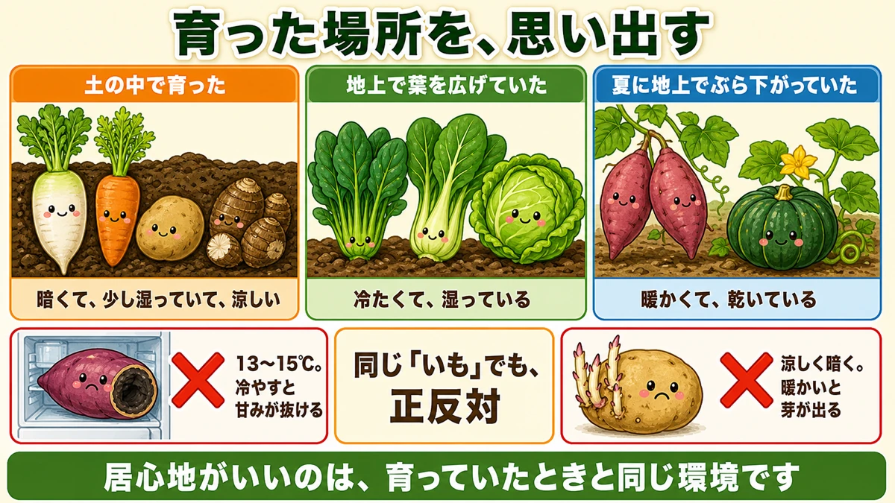
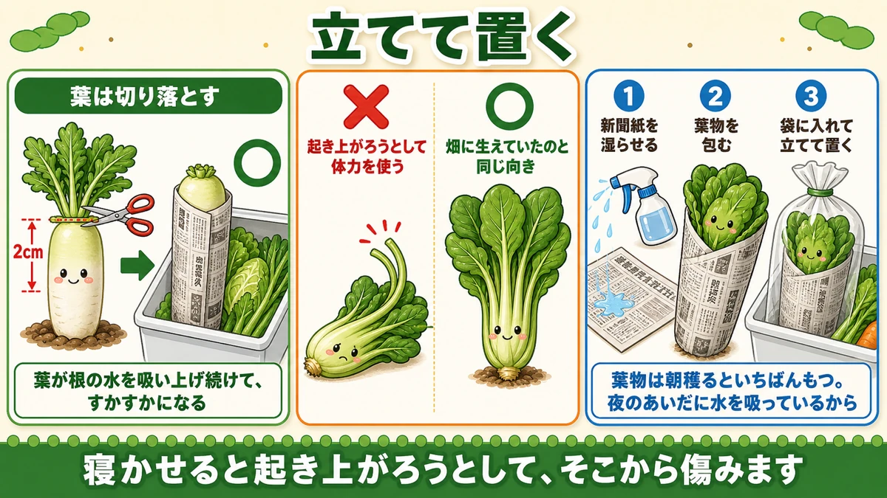
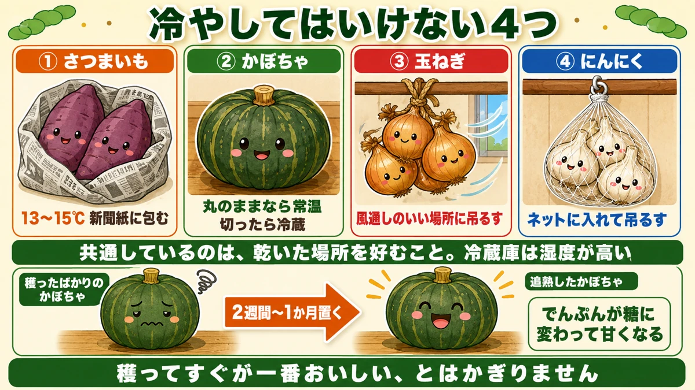

冷蔵庫に入れて縮む野菜があります🥕 育った場所で決まる話

🥕「たくさん穫れたけど、置いておいたら傷みました」
🥕「さつまいもを冷蔵庫に入れたら、味がなくなった」
🥕「ほうれん草が、次の日にはしなびていた」
どうも、8150（えいこう）です🌱 家庭菜園歴8年、理科の教員免許を持っていて、有機・無農薬で野菜を育てています。
今日は、穫ったあとの話です。
家庭菜園でいちばんもったいないのは、★せっかく穫ったものを傷ませることです。作るのに3か月かけて、置き場所を1回まちがえるだけで台無しになります。
先に、この記事でいちばん言いたいことを言っておきますね。
★保存の正解は、その野菜が育った場所で決まります。
育った場所を思い出す

考え方は、これだけです
野菜にとっていちばん居心地がいいのは、★育っていたときと同じ環境です。
- ★土の中で育ったもの（大根・にんじん・じゃがいも・里芋） … 暗くて、少し湿っていて、涼しい
- ★地上で葉を広げていたもの（ほうれん草・小松菜・キャベツ） … 冷たくて、湿っている
- ★夏に地上でぶら下がっていたもの（さつまいも・かぼちゃ） … 暖かくて、乾いている
★この3つに分けるだけで、置き場所はほぼ決まります。
だから、さつまいもは冷やせない
さつまいもは名前に「いも」とついていますが、★育ちは南国の野菜です。
だから★冷蔵庫に入れると低温障害を起こします。中が黒っぽくなって、甘みが抜けます。
正解は★新聞紙に包んで、13℃から15℃くらいの場所。玄関や、暖房のない部屋の隅です。
じゃがいもは、逆
じゃがいもは涼しい場所で育つ野菜です。★暖かいと芽が出ます。
だから★暗くて風が通る涼しい場所。段ボールか紙袋に入れて、光を当てないようにします。
★同じ「いも」でも正反対です。ここを取り違えると、どちらも傷みます。
根菜は、土に近い状態にする
葉を落とす
大根やにんじんは、★穫ったらすぐ葉を切り落としてください。
葉は、根から水を吸い上げ続けます。★収穫後も同じことをするので、根の水分が葉に取られて、すかすかになります。
★切るのは、葉の付け根から2cmくらい残す位置。ここで切ると、切り口から傷みにくいです。
立てて保存する
もうひとつ。★根菜は、畑に生えていたのと同じ向きで置きます。
横に寝かせると、野菜は「起き上がろう」として体力を使います。★立てておけば、その必要がありません。
新聞紙に包んで、★立てて冷蔵庫の野菜室へ。これだけで、もちが変わります。
大量なら、土に埋める
穫れすぎたときは、★畑に埋め戻すのがいちばんです。
穴を掘って、★葉を落とした大根を斜めに並べ、土をかぶせる。目印に棒を立てておきます。
土の中は温度が安定していて、乾きません。★冷蔵庫よりずっと長持ちします。2月ごろまで持ちます。
葉物は、乾かさない

水が抜ける速さが違う
ほうれん草や小松菜がすぐしなびるのは、★葉の面積が広いからです。
面積が広いぶん、水がどんどん出ていきます。★根菜のようにゆっくりではありません。
だから、湿らせて立てる
やることは2つです。
- ★濡らした新聞紙かキッチンペーパーで包む
- ★袋に入れて、立てて冷蔵庫へ
★立てるのは、根菜と同じ理由です。寝かせると起き上がろうとして、茎が曲がって傷みます。
穫る時間も、実は効きます
これは畑を持っている人だけの特権です。
★葉物は、朝穫るといちばんもちます。
夜のあいだに、葉が水をたっぷり吸っているからです。★昼に穫ると、すでに水が抜けた状態で穫ることになります。
★同じ野菜でも、穫る時間で日もちが変わります。
冷やしてはいけないもの、まとめ

この4つは常温です
- ★さつまいも … 13〜15℃。冷やすと甘みが抜ける
- ★かぼちゃ … 丸のままなら常温。切ったら冷蔵
- ★玉ねぎ … 風通しのいい場所に吊るす。湿気で腐る
- ★にんにく … 玉ねぎと同じ。ネットに入れて吊るす
★共通しているのは、乾いた場所を好むことです。冷蔵庫は湿度が高いので、この4つには向きません。
ひとつだけ例外
かぼちゃは★穫ってすぐが一番おいしいわけではありません。
2週間から1か月ほど置くと、★でんぷんが糖に変わって甘くなります。追熟と呼びます。
★穫ったその日に食べて「甘くない」と思った方は、置いてみてください。別ものになります。
学ぶ：野菜は、穫ったあとも生きています🔬
理科の時間です。
穫った野菜は、もう成長しません。★でも、呼吸は続けています。
呼吸というのは、★体の中にためた糖を使ってエネルギーを出すことです。人間がやっていることと同じです。
つまり★置いておくあいだ、野菜は自分の甘みを消費し続けています。
ここで温度が効いてきます。★温度が高いほど、呼吸は速くなります。目安として、10℃上がると呼吸はおよそ2倍です。
★冷やすと日もちするのは、呼吸を遅くして、甘みを使うスピードを落としているからです。
では、なぜ冷やしすぎがだめなのか。★細胞の中の膜が、低温でこわれてしまう野菜があるからです。南の生まれの野菜ほど、この温度が高い位置にあります。
★さつまいもの限界が13℃、というのはそういう意味です。
お子さんと一緒なら、★同じ野菜を「冷蔵庫」「常温」「暖かい部屋」の3か所に置いて、毎日重さを量ってみてください。★暖かい場所のものほど早く軽くなります。減ったぶんが、呼吸で使われた分と、逃げた水です。
まとめ
ここまで読んでくださって、ありがとうございました。
保存は、覚えることが多そうに見えて、原則はひとつです。
- ★育った場所に近い環境に置く。これが全部の答え
- ★根菜は葉を切り落とす。葉が根の水を吸い上げてしまう
- ★根菜も葉物も、立てて保存する。寝かせると起き上がろうとして傷む
- ★葉物は濡らした紙で包んで、袋に入れて立てる
- ★葉物は朝穫るといちばんもつ
- ★さつまいもは13〜15℃。冷蔵庫は厳禁
- ★じゃがいもは涼しく暗く。さつまいもと正反対
- ★玉ねぎ・にんにくは吊るす。湿気が敵
- ★かぼちゃは追熟させると甘くなる
- ★大量に穫れた根菜は、畑に埋め戻すのがいちばん長持ち
全部やろうとしなくて大丈夫です。まずは★次に穫った大根の葉を、その場で落としてみてください。持ちがはっきり変わります🥕
次回は、霜の話。★同じ寒さでも、枯れる株と枯れない株がある理由をお話しします❄️
米袋（紙）
じゃがいもの保存に。光を通さず、湿気もこもりません。
![[商品価格に関しましては、リンクが作成された時点と現時点で情報が変更されている場合がございます。]](https://hbb.afl.rakuten.co.jp/hgb/56bc3119.f1f4196c.56bc311a.c9ac6e4e/?me_id=1215024&item_id=10001843&pc=https%3A%2F%2Fthumbnail.image.rakuten.co.jp%2F%400_mall%2Fkminori%2Fcabinet%2Fhozai%2Fimg57520728.jpg%3F_ex%3D240x240&s=240x240&t=picttext "[商品価格に関しましては、リンクが作成された時点と現時点で情報が変更されている場合がございます。]")

乾燥剤
保存箱に一緒に入れておくと、玉ねぎやにんにくのもちが変わります。
![[商品価格に関しましては、リンクが作成された時点と現時点で情報が変更されている場合がございます。]](https://hbb.afl.rakuten.co.jp/hgb/56eb9618.3f325504.56eb9619.e861bcb7/?me_id=1358935&item_id=10000079&pc=https%3A%2F%2Fthumbnail.image.rakuten.co.jp%2F%400_mall%2Fhw-enable%2Fcabinet%2Fsilicagel%2Ffujigel%2F10gn.jpg%3F_ex%3D240x240&s=240x240&t=picttext "[商品価格に関しましては、リンクが作成された時点と現時点で情報が変更されている場合がございます。]")
ジッパー保存袋
葉物を濡らした紙で包んでから入れて、立てて冷蔵庫へ。
![[商品価格に関しましては、リンクが作成された時点と現時点で情報が変更されている場合がございます。]](https://hbb.afl.rakuten.co.jp/hgb/56eb9768.493f3421.56eb9769.0365e053/?me_id=1228244&item_id=10000759&pc=https%3A%2F%2Fthumbnail.image.rakuten.co.jp%2F%400_mall%2Fluxfort%2Fcabinet%2Fgtg2%2Fxp-13_w.jpg%3F_ex%3D240x240&s=240x240&t=picttext "[商品価格に関しましては、リンクが作成された時点と現時点で情報が変更されている場合がございます。]")
収穫メッシュバッグ
風を通したまま運べます。吊るせない分の一時置きにも。

あわせて読みたい